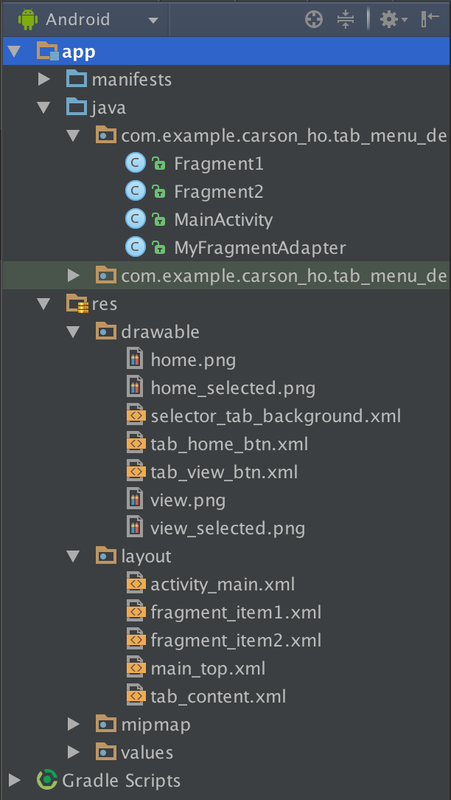

前言
Android开发中使用底部菜单栏的频次非常高，主要的实现手段有以下：
- TabWidget
- 隐藏TabWidget，使用RadioGroup和RadioButton
- FragmentTabHost
- 5.0以后的TabLayout
- 最近推出的 Bottom navigation
今天带大家来探索下如何用Fragment+FragmentTabHost++ViewPager
实现底部菜单栏
总体设计思路
- Fragment：存放不同选项的页面内容
- FragmentTabHost：点击切换选项卡
- ViewPager：实现页面的左右滑动效果
概念介绍
FragmentTabHost
用于实现点击选项进行切换选项卡的自定义效果
使用FragmentTabHost，就是先用TabHost“装着”Fragment，然后放进MainActivity里面
ViewPager
- 定义
ViewPager是android扩展包v4包中的类
android.support.v4.view.ViewPager
- 作用
左右切换当前的view，实现滑动切换的效果。
注：
1.ViewPager类直接继承了ViewGroup类，和LinearLayout等布局一样，都是一个容器，需要在里面添加我们想要显示的内容。
2.ViewPager类需要PagerAdapter适配器类提供数据，与ListView类似
3.Google官方建议ViewPager配合Fragment使用
Fragment
- 定义
Fragment是activity的界面中的一部分或一种行为
1.把Fragment认为模块化的一段activity
2.它具有自己的生命周期，接收它自己的事件，并可以在activity运行时被添加或删除
3.Fragment不能独立存在，它必须嵌入到activity中，而且Fragment的生命周期直接受所在的activity的影响。例如：当activity暂停时，它拥有的所有的Fragment们都暂停了，当activity销毁时，它拥有的所有Fragment们都被销毁。
- 作用
主要是为了支持更动态、更灵活的界面设计（从3.0开始引入）
实现步骤
- 在主xml布局里面定义一个FragmentTabHost控件
- 定义底部菜单栏布局
- 定义每个Fragment布局
- 定义每个Fragment的Java类
- 定义适配器以关联页卡和ViewPage
- 定义MainActivity（具体实现请看注释）
工程文件目录

具体实现实例
步骤1：在主xml布局里面定义一个FragmentTabHost控件
主xml布局：Main_tab_layout.xml
<?xml version="1.0" encoding="utf-8"?>
<RelativeLayout xmlns:android="http://schemas.android.com/apk/res/android"
xmlns:tools="http://schemas.android.com/tools"
android:layout_width="fill_parent"
android:layout_height="fill_parent"
android:orientation="vertical" >
<include layout="@layout/main_top" />
<android.support.v4.view.ViewPager
android:id="@+id/pager"
android:layout_width="match_parent"
android:layout_height="0dp"
android:layout_weight="1" /><!--装4个Fragment-->
<FrameLayout
android:visibility="gone"
android:layout_width="match_parent"
android:layout_height="0dp"
android:layout_weight="1" />
<!--定义FragmentTabHost控件-->
<android.support.v4.app.FragmentTabHost
android:id="@android:id/tabhost"
android:layout_width="fill_parent"
android:layout_height="wrap_content"
android:background="@android:color/black" ><!--装4个Fragment-->
<FrameLayout
android:id="@android:id/tabcontent"
android:layout_width="0dp"
android:layout_height="0dp"
android:layout_weight="0" /><!--装Tab的内容-->
</android.support.v4.app.FragmentTabHost>
</RelativeLayout>
步骤2：定义底部菜单栏布局
tab_content.xml
一般是图片在上，文字在下
<?xml version="1.0" encoding="utf-8"?>
<LinearLayout xmlns:android="http://schemas.android.com/apk/res/android"
android:layout_width="match_parent"
android:layout_height="match_parent"
android:gravity="center"
android:orientation="vertical"
android:background="#ffffff">
<ImageView
android:id="@+id/tab_imageview"
android:layout_width="wrap_content"
android:layout_height="wrap_content"
/>
<TextView
android:id="@+id/tab_textview"
android:layout_width="wrap_content"
android:layout_height="wrap_content"
android:text=""
android:textColor="@drawable/selector_text_background" />
</LinearLayout>
步骤3：定义Fragment布局
fragment_item1.xml&fragment_item2.xml
这里使用两个选项，由于fragment_item1.xml与fragment_item2.xml相同，这里只贴出一个
fragment_item1.xml
<?xml version="1.0" encoding="utf-8"?>
<LinearLayout xmlns:android="http://schemas.android.com/apk/res/android"
android:orientation="vertical"
android:layout_width="match_parent"
android:layout_height="match_parent">
<TextView
android:id="@+id/textView1"
android:layout_width="wrap_content"
android:layout_height="wrap_content"
android:text="fragment1"
android:textSize="20sp"/>
</LinearLayout>
步骤4： 定义每个Fragment的Java类
1.这里使用两个选项：Fragment1.java&fragmen2.java
2.由于Fragment1.java&fragmen2.java相同，这里只贴出一个
Fragment1.java
package com.example.carson_ho.tab_menu_demo;
import android.os.Bundle;
import android.support.v4.app.Fragment;
import android.view.LayoutInflater;
import android.view.View;
import android.view.ViewGroup;
/**
* Created by Carson_Ho on 16/5/23.
*/
public class Fragment1 extends Fragment
{
@Override
public View onCreateView(LayoutInflater inflater, ViewGroup container, Bundle savedInstanceState) {
View view = inflater.inflate(R.layout.fragment_item1, null);
return view;
}
}
步骤5： 定义适配器关联页卡和ViewPage
MyFragmentAdapter.java
package com.example.carson_ho.tab_menu_demo;
import android.support.v4.app.Fragment;
import android.support.v4.app.FragmentManager;
import android.support.v4.app.FragmentPagerAdapter;
import java.util.List;
/**
* Created by Carson_Ho on 16/5/23.
*/
public class MyFragmentAdapter {extends FragmentPagerAdapter
{
List<Fragment> list;
public MyFragmentAdapter(FragmentManager fm,List<Fragment> list) {
super(fm);
this.list=list;
}//写构造方法，方便赋值调用
@Override
public Fragment getItem(int arg0) {
return list.get(arg0);
}//根据Item的位置返回对应位置的Fragment，绑定item和Fragment
@Override
public int getCount() {
return list.size();
}//设置Item的数量
}
步骤6： 定义MainActivity
具体实现看注释
MainActivity.java
package com.example.carson_ho.tab_menu_demo;
import android.os.Bundle;
import android.support.v4.app.Fragment;
import android.support.v4.app.FragmentActivity;
import android.support.v4.app.FragmentTabHost;
import android.support.v4.view.ViewPager;
import android.view.LayoutInflater;
import android.view.View;
import android.view.ViewGroup;
import android.widget.ImageView;
import android.widget.TabHost;
import android.widget.TabWidget;
import android.widget.TextView;
import java.util.ArrayList;
import java.util.List;
public class MainActivity extends FragmentActivity implements
ViewPager.OnPageChangeListener, TabHost.OnTabChangeListener {
private FragmentTabHost mTabHost;
private LayoutInflater layoutInflater;
private Class fragmentArray[] = { Fragment1.class, Fragment2.class };
private int imageViewArray[] = { R.drawable.tab_home_btn, R.drawable.tab_view_btn };
private String textViewArray[] = { "首页", "分类"};
private List<Fragment> list = new ArrayList<Fragment>();
private ViewPager vp;
@Override
protected void onCreate(Bundle savedInstanceState) {
super.onCreate(savedInstanceState);
setContentView(R.layout.activity_main);
initView();//初始化控件
initPage();//初始化页面
}
// 控件初始化控件
private void initView() {
vp = (ViewPager) findViewById(R.id.pager);
/*实现OnPageChangeListener接口,目的是监听Tab选项卡的变化，然后通知ViewPager适配器切换界面*/
/*简单来说,是为了让ViewPager滑动的时候能够带着底部菜单联动*/
vp.addOnPageChangeListener(this);//设置页面切换时的监听器
layoutInflater = LayoutInflater.from(this);//加载布局管理器
/*实例化FragmentTabHost对象并进行绑定*/
mTabHost = (FragmentTabHost) findViewById(android.R.id.tabhost);//绑定tahost
mTabHost.setup(this, getSupportFragmentManager(), R.id.pager);//绑定viewpager
/*实现setOnTabChangedListener接口,目的是为监听界面切换），然后实现TabHost里面图片文字的选中状态切换*/
/*简单来说,是为了当点击下面菜单时,上面的ViewPager能滑动到对应的Fragment*/
mTabHost.setOnTabChangedListener(this);
int count = textViewArray.length;
/*新建Tabspec选项卡并设置Tab菜单栏的内容和绑定对应的Fragment*/
for (int i = 0; i < count; i++) {
// 给每个Tab按钮设置标签、图标和文字
TabHost.TabSpec tabSpec = mTabHost.newTabSpec(textViewArray[i])
.setIndicator(getTabItemView(i));
// 将Tab按钮添加进Tab选项卡中，并绑定Fragment
mTabHost.addTab(tabSpec, fragmentArray[i], null);
mTabHost.setTag(i);
mTabHost.getTabWidget().getChildAt(i)
.setBackgroundResource(R.drawable.selector_tab_background);//设置Tab被选中的时候颜色改变
}
}
/*初始化Fragment*/
private void initPage() {
Fragment1 fragment1 = new Fragment1();
Fragment2 fragment2 = new Fragment2();
list.add(fragment1);
list.add(fragment2);
//绑定Fragment适配器
vp.setAdapter(new MyFragmentAdapter(getSupportFragmentManager(), list));
mTabHost.getTabWidget().setDividerDrawable(null);
}
private View getTabItemView(int i) {
//将xml布局转换为view对象
View view = layoutInflater.inflate(R.layout.tab_content, null);
//利用view对象，找到布局中的组件,并设置内容，然后返回视图
ImageView mImageView = (ImageView) view
.findViewById(R.id.tab_imageview);
TextView mTextView = (TextView) view.findViewById(R.id.tab_textview);
mImageView.setBackgroundResource(imageViewArray[i]);
mTextView.setText(textViewArray[i]);
return view;
}
@Override
public void onPageScrollStateChanged(int arg0) {
}//arg0 ==1的时候表示正在滑动，arg0==2的时候表示滑动完毕了，arg0==0的时候表示什么都没做，就是停在那。
@Override
public void onPageScrolled(int arg0, float arg1, int arg2) {
}//表示在前一个页面滑动到后一个页面的时候，在前一个页面滑动前调用的方法
@Override
public void onPageSelected(int arg0) {//arg0是表示你当前选中的页面位置Postion，这事件是在你页面跳转完毕的时候调用的。
TabWidget widget = mTabHost.getTabWidget();
int oldFocusability = widget.getDescendantFocusability();
widget.setDescendantFocusability(ViewGroup.FOCUS_BLOCK_DESCENDANTS);//设置View覆盖子类控件而直接获得焦点
mTabHost.setCurrentTab(arg0);//根据位置Postion设置当前的Tab
widget.setDescendantFocusability(oldFocusability);//设置取消分割线
}
@Override
public void onTabChanged(String tabId) {//Tab改变的时候调用
int position = mTabHost.getCurrentTab();
vp.setCurrentItem(position);//把选中的Tab的位置赋给适配器，让它控制页面切换
}
}